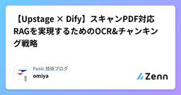
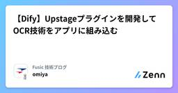

Fusic 技術ブログのフィード
https://zenn.dev/p/fusic
さまざまな個性を受け入れて有機的につなぐ社内環境を整える。あらゆる事業機会の創出と実現を繰り返し、世の中に対する視点を絶えず増やして成長していく。あっと驚くような角度から発展できるポイントを見つけ、そこにいい感じにフィットする形でテクノロジーを組み込んで、世の中をちょっとずつ、時
フィード

【Upstage × Dify】スキャンPDF対応RAGを実現するためのOCR&チャンキング戦略
Fusic 技術ブログのフィード
はじめにこんにちは。Fusicの大宮です。Difyを使えば、RAGアプリケーションを素早く構築できます。PDFをソースとしてナレッジベースを作り、チャットボットを構築するユースケースも一般的です。しかし、スキャンされた文字(画像として埋め込まれる）データを含むPDF(以下スキャンPDF)や、画像ファイルを用いてナレッジを作成してみたところ、期待していた回答が得られないという問題に直面しました。調査を進めると、根本的な原因は Dify の標準機能では OCR が行われない点にありました。本記事では、その課題と対処方法、そしてHTML構造保持に関する工夫についてまとめます。...
3日前
推薦システムをChatGPTで
Fusic 技術ブログのフィード
本記事は、Fusicアドベントカレンダーの8日目の記事です。これ使えるじゃんとなったGPT-3がでて、プロンプト作成のテクニックもかなり広まりました。その中で、ここのところ自分が一番やってる使い方として、「検索していいものを抽出すること」かなと思います。出たばかりの時は、存在しないリンクを出してきたり、全く内容の違う記事内容を解説したりとお世辞にも使えるものではなかったです。ブラウジングで検索することと、アイディアを出すGPTとで棲み分けがされてたのに、今ではこれだけで完結してしまうことも多いのかなと思います。なので、意外と需要あんのかもなーっていうところで、誰かの役に立てば...
5日前

【Dify】Upstageプラグインを開発してOCR技術をアプリに組み込む
Fusic 技術ブログのフィード
はじめにこんにちは。Fusicの大宮です🫡いきなりですが、Upstageの提供するOCR/DocumentAI技術を、ノーコードで生成AIサービスを開発できるプラットフォームであるDifyに組み込めれば幸せですよね👀今回はそれを実現するプラグインの開発をしたので紹介します。20251207現在、Dify公式にPRを送信しているので、承認されたタイミングでDify Marketplace上でのインストールが可能になります。 パッケージ/PR作成Dify公式に従ってパッケージテンプレートを取得/開発/公開します。開発工程では、実際のコードとプラグイン/ツールの説明...
6日前

Terraformではじめる Amazon S3 Vectors を使ったRAG構築ハンズオン
Fusic 技術ブログのフィード
はじめにFusicのレオナです。AWS re:Invent 2025でAmazon S3 VectorsがGAされました。それに伴い、Terraform 6.24.0からS3 Vectorsがサポートされたので本ブログはTerraformでRAG構築をしてみたいと思います。また今回はRAGの精度検証、および考察はしません。https://github.com/hashicorp/terraform-provider-aws/releases/tag/v6.24.0 Amazon S3 VectorsとはAmazon S3 Vectorsは、Amazon S3にベクトル検索...
9日前
自然言語から最適化モデルへ、Autoformulationについて
Fusic 技術ブログのフィード
物流、製造、金融などあらゆる意思決定を支える技術基盤として数理最適化はかなり強力な手法であり、ここ最近では強力かつ安価なヒューリスティックソルバーが出てきているなど、その利用がアカデミックから産業界へどんどん活用されていっています。一方で、「定式化」という数学的なモデリングにはかなり時間を要するし、それなりに専門知識も必要になってきます。また、基本的なモデリングを理解したとして、実際の業務フローを数式に直すとなると苦戦することになると思います。最近では、LLMの躍進により業務上の制約を数学モデルに落とし込むための方法がそこそこ目につくようになりました。本記事ではICML 2025...
25日前
Amazon Bedrock AgentCore Runtimeで zip ファイルを直接アップロードでデプロイしてみた
Fusic 技術ブログのフィード
はじめにFusicのレオナです。本ブログは2025年11月にAmazon Bedrock AgentCoreに追加された機能である、zipファイルを直接アップロードしてAIエージェントをデプロイできるようになったので試してみました。https://aws.amazon.com/jp/about-aws/whats-new/2025/11/amazon-bedrock-agentcore-runtime-code-deployment/ 概要従来はコンテナイメージを Amazon ECRにPush後、Amazon Bedrock AgentCore Runtimeでデプロイし...
1ヶ月前
AWS Diagram MCP Server で自然言語からAWSアーキテクチャ図を作成し、Pythonでコード管理する
Fusic 技術ブログのフィード
はじめに今回はAWS Diagram MCP Serverを紹介します。https://awslabs.github.io/mcp/servers/aws-diagram-mcp-serverMCPとは、大まかにいうと、Claude CodeやCursor、Claude DesktopやらのAIツール系と連携して、いい感じにあれこれ便利なことできるヤツです。この記事では、AWS Diagram MCPを用いてAWSアーキテクチャ図を作成します。また、上記の公式Docにも記載の通り、内部的にはPythonライブラリのdiagramsが使用されるので、ダイアグラムをソースコード...
2ヶ月前
cssbundling-railsでTailwindCSSを指定して404エラーが出たときの対処法
Fusic 技術ブログのフィード
久々に rails new したときに不可解なエラーが出たため、備忘録を残します。 発生した現象bin/dev でRailsアプリケーションを起動しブラウザでアクセスし、DevToolを確認したところ「コンソール」や「ネットワーク」タブにて404エラーが表示される。 前提条件CSS Bundling for Rails ( cssbundling-rails )でTailwindCSS( tailwind )を指定している私は rails new sample-app --javascript=esbuild --css=tailwind --skip-test ...
2ヶ月前
リモセン02 - Sentinel-2データの土地利用分類 ー 衛星データ超入門 （Sentinel-2 編）
Fusic 技術ブログのフィード
目的Sentinel-2データの土地利用分類。Sentinel-2 は、ESA(欧州宇宙機関）が提供する リモートセンシングでもっともよくつかわれるフリーの高品質なデータです。土地利用分類の分類を自前で学習して分類してみようという企画です。リモートセンシングのデータの基礎操作を一通りやってみます。 参考 Sentinel-2 などの用語説明についてhttps://zenn.dev/fusic/articles/d21ac63d8d3c69#sentinel-2 NDVI (植生/NDWI・水指数）についてNDVI（正規化植生指数）は、衛星画像の赤...
2ヶ月前
AWS Lambda(Ruby)の起動が遅い…ボトルネックを特定するまでの道のり
Fusic 技術ブログのフィード
壮大なタイトルではありますが、先に結論を書くと、require 'aws-sdk'この部分をrequire 'aws-sdk-sqs'のように、 使用するモジュール(今回で言うとSQS)に絞る ことで起動が速くなりました。そして、もう一つは Rubyを3.2→3.4に上げること です。これも高速化に寄与しました。ポイントとしてはこの2点なのですが、この結論に至るまでに試したことや、他にもこんなアプローチがあったな、など思うことがあったので記事にしてみました。 起こっていた問題弊社内で利用しているSlack Appにて呼び出している「Amazon API Gateway ...
2ヶ月前
AWS Strands AgentsをAmazon Bedrock AgentCoreにCloudFormationでデプロイしてみた
Fusic 技術ブログのフィード
はじめFusicのレオナです。今回は、Amazon Bedrock AgentCoreにStrands AgentsをCloudFormationでデプロイし、Strands Agentsを動作させる方法について解説します注意：本ブログは 2025年10月1日時点の機能を基に執筆しています。Amazon Bedrock AgentCoreはプレビュー版です。 Strands AgentsとはStrands Agentsは、AWSが2025年5月に公開したオープンソースのAIエージェント構築SDKで、2025年7月にバージョン1.0がリリースされました。数行のPytho...
2ヶ月前
AWS Strands AgentsでUpstageのSolar Pro 2を動かしてみた
Fusic 技術ブログのフィード
はじめにFusicのレオナです。今回はUpstageのLLM、Solar Pro 2。なお、弊社は生成AI分野における包括的な協業を目指し、Upstageと業務提携を結んでおります。詳細はこちらからご覧ください。 Solar Pro 2とはUpstageが2025年7月に公開した31BパラメータのLLMで、複雑な推論とツール連携による実務タスクの自動化を現実的な運用コストで回すことを狙いに設計されたモデルです。前モデルのSolar Proに比べ多言語対応も強化され、特に韓国語では大型モデルと競合する水準を公式が示しており、日本語・英語のベンチマークでも安定した結果を出していま...
3ヶ月前
C Extensionを含むRuby Gemの作り方
Fusic 技術ブログのフィード
Rubyには数多くのライブラリ（Gem）が公開されており、アプリケーション開発を効率的に進めるうえで欠かせない存在となっています。その中でも、Rubyだけでは表現しにくい高速な処理や既存のC言語ライブラリを活用する場合に用いられるのが C Extension(日本語でC言語拡張) です。C Extensionを含むGemの作成方法については、これまでも多くの記事や資料が存在します。しかし、検索で見つかる情報の多くは古く、Rubyやビルドツールのバージョン差異により、手順通りに進めてもエラーが出てしまうケースが少なくありません。そこで本記事では、2025年時点で実際に動作確認できた最...
3ヶ月前
AWS Knowledge MCP ServerとAWS Documentation MCP Serverの違いと試してみた
Fusic 技術ブログのフィード
はじめにFusicのレオナです。AWSが公開しているOSSの一部として「AWS MCP Servers」があります。このリポジトリでは、AWSの開発ワークフローに沿ったベストプラクティスを直接取り入れるために設計された、専用のMCP（Model Context Protocol）サーバー群が紹介されています。これらのMCPサーバーは、AWSドキュメントの検索、CDKにおけるベストプラクティスの実装、コスト分析、画像生成など、さまざまなタスクに対応します。今回は、AWS公式ドキュメントや、ブログ、What’s Newなどの検索が可能な AWS Knowledge MCP Serve...
3ヶ月前
オープンな LLM モデルの悪意ある使用のリスクに関する論文を読んだ
Fusic 技術ブログのフィード
こんにちは、初めましての方は初めまして。株式会社 Fusic の瓦です。スパルタンレースが二週間後にありますが、あまりに暑すぎてレース中に熱中症で倒れるんじゃないかと戦々兢々としています。少し前に OpenAI から gpt-oss が発表されて話題になっており、ローカルでホストして活用している記事も多く見かけます。今回はその OpenAI が出した ESTIMATING WORST-CASE FRONTIER RISKS OF OPEN-WEIGHT LLMS という論文を読んだので、そのメモを残しておきます。 概要この論文では、gpt-oss に対して悪意のあるファインチュー...
3ヶ月前
AWS Strands Agents Multiagent Graph 試してみた
Fusic 技術ブログのフィード
はじめにFusicのレオナです。今回は、Strands AgentsのMultiagent Graph機能を使ってみました。 Strands AgentsとはStrands Agentsは、AWSが2025年5月に公開したオープンソースのAIエージェント構築SDKで、2025年7月にバージョン1.0がリリースされました。数行のPythonコードでAIエージェントを作成できるモデル駆動型のフレームワークです。ベータ版のStrands Agentsについて執筆した以下のブログも参考にしてください。https://zenn.dev/fusic/articles/8dd670c3...
3ヶ月前
Amazon S3 Vectorsを試してみた
Fusic 技術ブログのフィード
はじめにFusicのレオナです。本ブログでは2025年7月にプレビュー発表されたAmazon S3 Vectorsを用いて、Amazon S3のみでRAGにおける検索の方法を紹介します。従来、RAGシステムではAmazon KendraやAmazon Bedrock Knowledge Bases、OpenSearchやPineconeなどの専用ベクトルストアを用意するのが一般的でしたが、S3 Vectorsの登場により、S3だけでベクトルの保存と検索ができるようになりました。!本ブログは執筆時点ではプレビュー版の情報を用いて作成しています。...
4ヶ月前
『Document AIが生成AI活用のカギ』になる理由を事例ベースで解説
Fusic 技術ブログのフィード
自己紹介こんにちは、Fusicのハンです。ふだんは日本語音声合成（TTS）モデルの開発や、Document AI × LLMを活用した業務効率化、その他AIにまつわる技術・相談支援をしています。株式会社Fusicは、AWS／Web／アプリ／IoT／AIなど広範な技術領域をカバーしていて、ITの構想フェーズから開発・運用まで一気通貫で支援している会社です。もし「AI活用したい」「ドキュメントをなんとかしたい」などご興味ありましたら、お気軽にご連絡ください！ はじめに：生成AI、うまく使えてますか？最近では、RAG（Retrieval-Augmented Generati...
4ヶ月前
Upstage Document Parseでテキスト抽出精度を底上げするDifyツールを作ってみた
Fusic 技術ブログのフィード
自己紹介こんにちは、Fusicのハンです。普段は日本語音声合成（TTS）モデルの開発や、Document AI＋LLMを使った業務効率化、その他AIに関する相談・実装支援などを行なっています。株式会社Fusicは、AWS／Web／アプリ／IoT／AIといった幅広い技術領域の知見を活かし、IT活用の構想づくりからシステム開発・運用まで一気通貫で伴走支援している会社です。もしご興味あれば、ぜひお気軽にお声かけください！ はじめに最近、生成AIまわりの進化スピードが本当に速く、関連ツールやプラットフォームも次々にアップデートされています。そんな中、Difyを試してみたとこ...
4ヶ月前
Strands AgentsのToolに"Tavily"を活用して高度なWEB検索を行う
Fusic 技術ブログのフィード
はじめにこんにちはFusicの大宮です🫡🙇💪前回、「Googleのカスタム検索エンジンを使用してWEB検索を行う」という内容で記事を書きました。今回は StrandsAgentsにWEB検索を行わせるための手段として"Tavily"を活用してみました。結論として、GoogleCSMよりもLLMとの相性が良く、高機能で使い勝手が良かったです。結論に行き着いた調査・検証結果をまとめました。 TavilyとはAIエージェント向けの安全でモジュール化されたWebインテリジェンスTavilyは、LLMエージェント向けに特別に設計されたAPIファーストのWebインテリジェ...
4ヶ月前